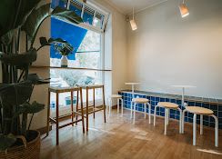
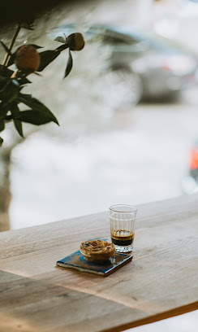
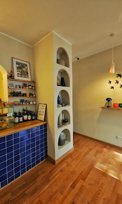
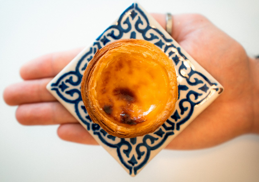

Öffnungszeiten
- Montag9:00 - 17:00
- Dienstag9:00 - 17:00
- MittwochGeschlossen
- Donnerstag9:00 - 17:00
- Freitag9:00 - 17:00
- Samstag9:00 - 17:00
- Sonntag10:00 - 17:00
About
BICA ist inspiriert von den kleinen Cafes in Lissabon: klare Formen, warmes Licht, handwerklicher Kaffee und ein kurzer Moment Ruhe im Alltag.
Wir arbeiten mit feinen Aromen, hellen Materialien und einer reduzierten Atmosphäre. Zwischen Holz, azulejo-Blau und einem frischen pastel de nata darf der Tag etwas langsamer werden.
Visit
Space



